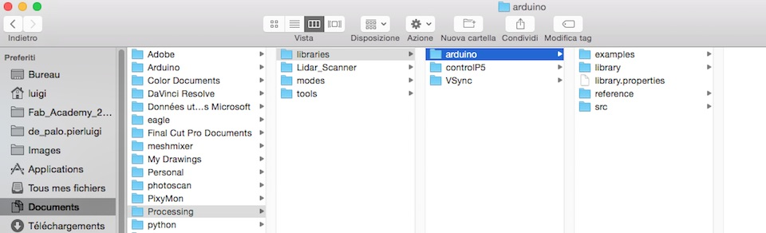
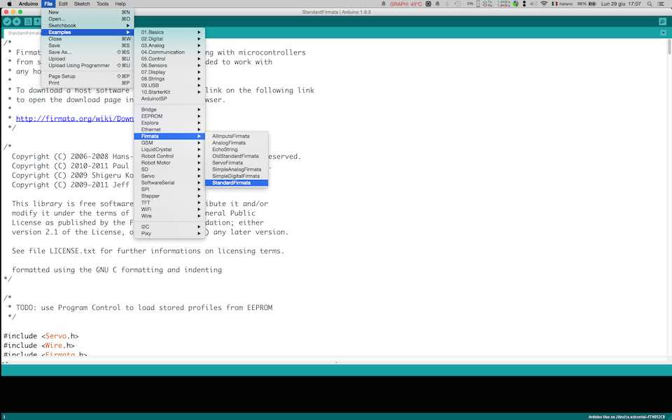
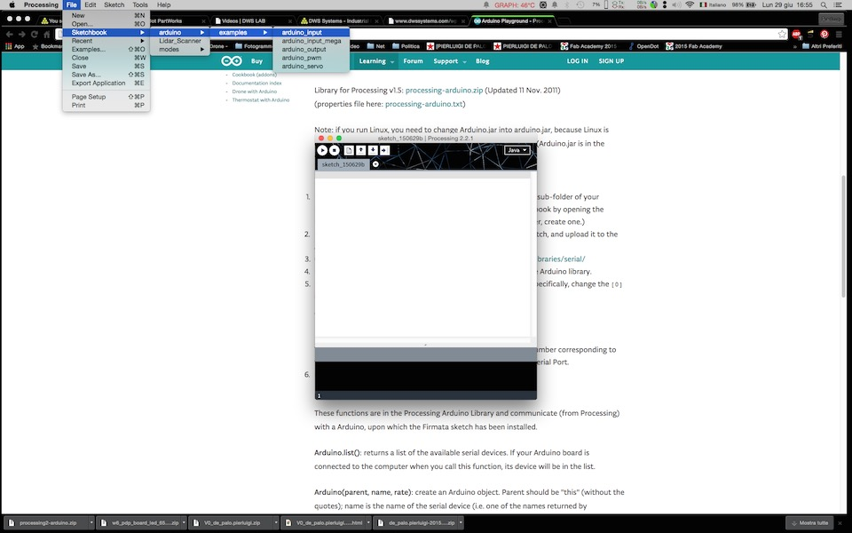
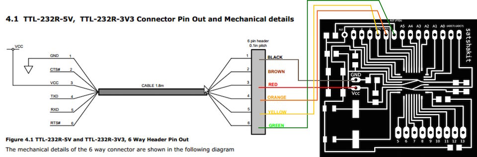
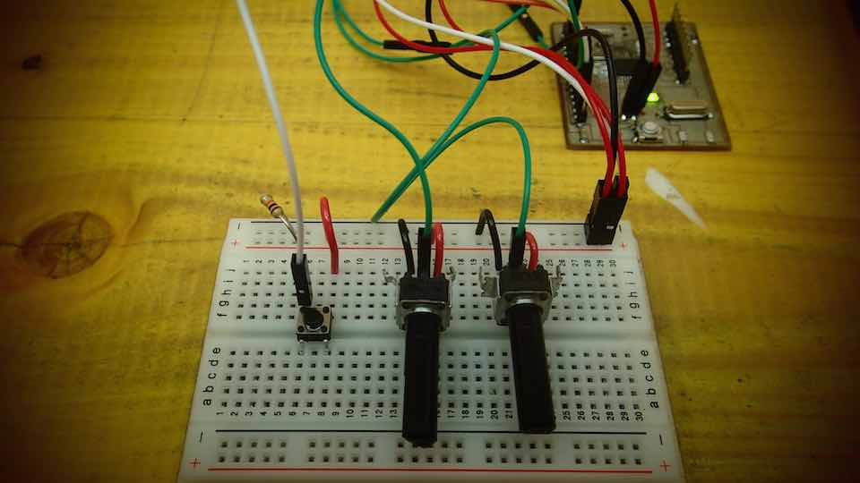
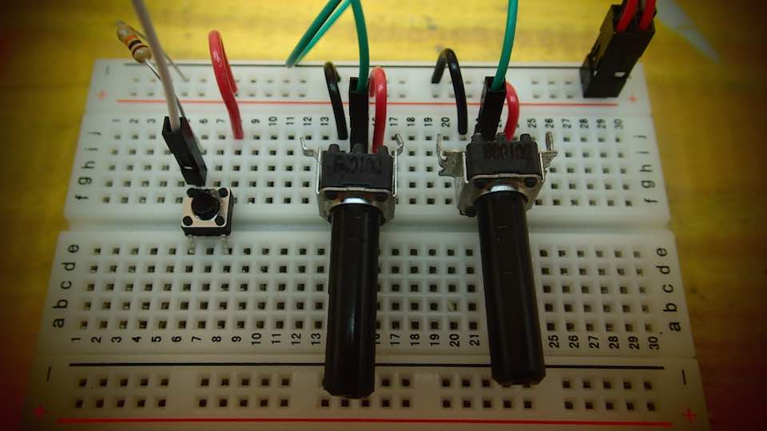

****************************************************************************************************************
ASSIGNMENT: WRITE A DESKTOP APPLICATION THAT INTERFACES WITH AN INPUT AND OUTPUT DEVICE
PROJECT: DROW WHIT 2 POTENTIOMETER
INPUT: POTENTIOMETER // PUSH BUTTON
SOFT: IDE ARDUINO 1.6.3 // PROCESSING
BOARD: SATSHAKIT BY --> DANIELE INGRASSIA // GIT HUB REPOSITORY OF THE PROJECT
LIBRARY: PROCESSING 2 - ARDUINO // ARDUINO FIRMATA
TUTORIAL: ARDUINO AND PROCESSING
DOWNLOAD:
****************************************************************************************************************
COMPONENT USED FOR THE EXERCISE : 2X POTENTIOMETERS - 1 PUSH BUTTON - 1 RESISTOR 10k
I follow the Arduino and Processing turorial linked on the tutorial section in this page
Download the PROCESSING 2 - ARDUINO library
Unzip the library and copy the "arduino" folder into the "libraries" sub-folder of my Processing Sketchbook.

Run Arduino, open the Examples > Firmata > StandardFirmata sketch, and upload it to the Arduino board.

In Processing, open one of the examples that comes with the Arduino library.

Connect the SATSHAKIT whit a FTDI cable following the image below




List of the changement done in the sketch :
Added a color variable colled : color ballc
Change the size of the renderer
I add an "IF" statement that check the status of the push button connected to the pin number 4
Then delete the previous draw and change the color of the ball.
I created an Ellipse function that is moving according to the values collected from the microcontroller analogs input
/*
Modified Sketch By Pierluigi De Palo -Opendot Fab Lab Milano-
Fab Academy 2015 - INTERFACE AND APPLICATION PROGRAMMING -
arduino_input
Demonstrates the reading of digital and analog pins of an Arduino board
running the StandardFirmata firmware.
To use:
* Using the Arduino software, upload the StandardFirmata example (located
in Examples > Firmata > StandardFirmata) to your Arduino board.
* Run this sketch and look at the list of serial ports printed in the
message area below. Note the index of the port corresponding to your
Arduino board (the numbering starts at 0). (Unless your Arduino board
happens to be at index 0 in the list, the sketch probably won't work.
Stop it and proceed with the instructions.)
* Modify the "arduino = new Arduino(...)" line below, changing the number
in Arduino.list()[0] to the number corresponding to the serial port of
your Arduino board. Alternatively, you can replace Arduino.list()[0]
with the name of the serial port, in double quotes, e.g. "COM5" on Windows
or "/dev/tty.usbmodem621" on Mac.
* Run this sketch. The squares show the values of the digital inputs (HIGH
pins are filled, LOW pins are not). The circles show the values of the
analog inputs (the bigger the circle, the higher the reading on the
corresponding analog input pin). The pins are laid out as if the Arduino
were held with the logo upright (i.e. pin 13 is at the upper left). Note
that the readings from unconnected pins will fluctuate randomly.
For more information, see: http://playground.arduino.cc/Interfacing/Processing
*/
import processing.serial.*;
import cc.arduino.*;
Arduino arduino;
//color off = color(4, 79, 111);
//color on = color(84, 145, 158);
color ballc= color(255, 255, 255); // set initial color of the ball to white
void setup() {
size(600,400);
// Prints out the available serial ports.
println(Arduino.list());
// Modify this line, by changing the "0" to the index of the serial
// port corresponding to your Arduino board (as it appears in the list
// printed by the line above).
arduino = new Arduino(this, Arduino.list()[5], 57600);
// Alternatively, use the name of the serial port corresponding to your
// Arduino (in double-quotes), as in the following line.
//arduino = new Arduino(this, "/dev/tty.usbmodem621", 57600);
for (int i = 0; i <= 13; i++)
arduino.pinMode(i, Arduino.INPUT); // Set the Arduino digital pins as inputs.
}
void draw() {
if (arduino.digitalRead(4) == arduino.HIGH) { // read the value of the digital pin 4 and check if is HIGH
background(205); //create the background to erase the draw
ballc = color(random(0, 255), random(0, 255), random(0, 255)); // create a new random color for the ball
}
//background(205);
fill(ballc); // set the color to the ball
noStroke(); // delete the stroke
// create a ball according to the value of the potentiometer
ellipse(map(arduino.analogRead(0),0,1024,0, width), map(arduino.analogRead(1),0,1024,0, height), 10, 10);
}